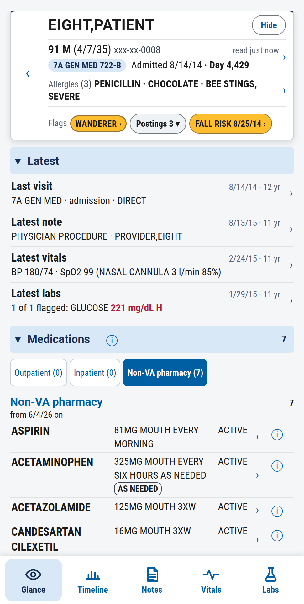
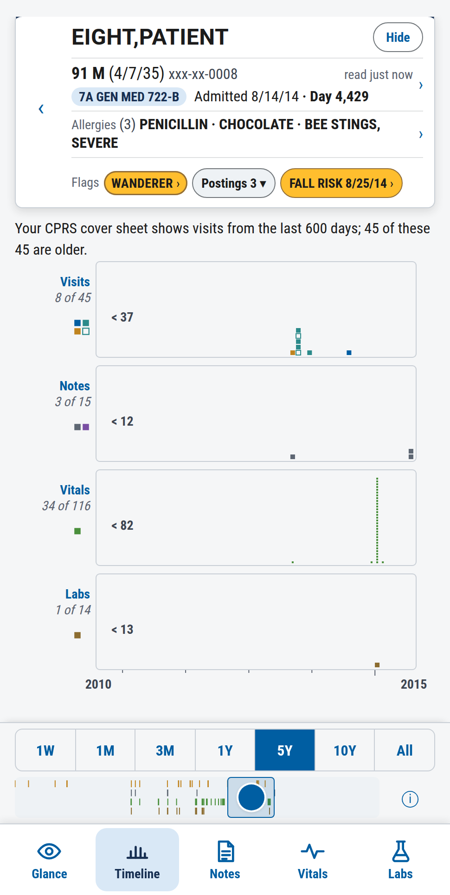
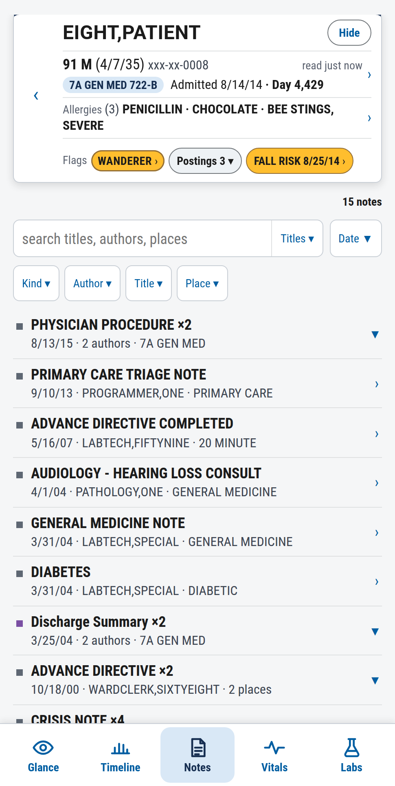
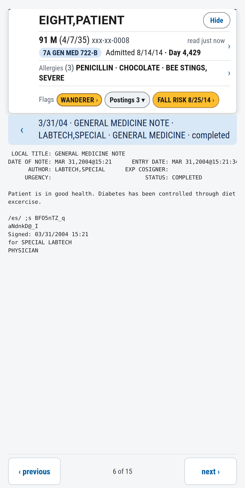
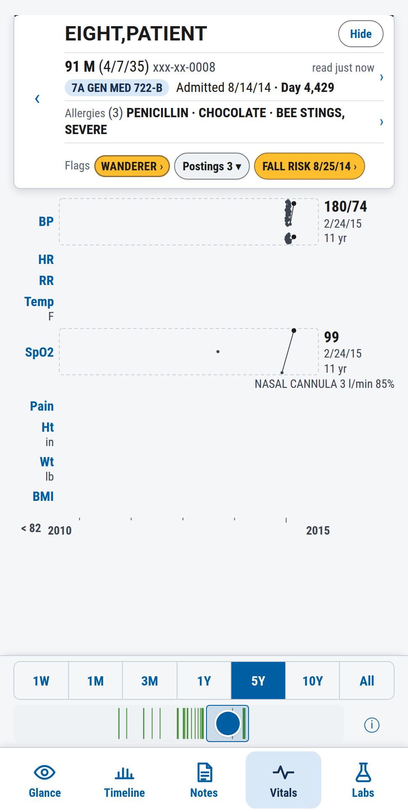
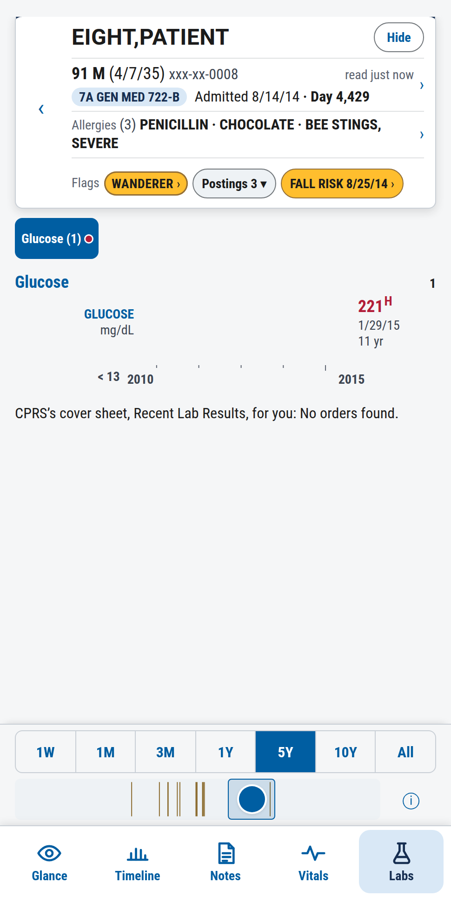

Abstract
Certo is the phone app that reads a patient's VistA record through the same calls CPRS makes, and this page specifies its planned voice and text search. A physician holds a button and says trend potassium, last 7 days
, or types it, and lands on the screen that a few taps would have reached. A small fixed grammar turns the words into one structured query. No language model takes part. The answer is VistA's own text, drawn by code, with its date, author and status, and the same question on the same record always gives the same answer. AI scribes and chart assistants cannot make that promise, because they generate their text. The search therefore sits beside them as the place a clinician checks what they produced. This page gives the specification, the market evidence, the voice interface screen by screen, Certo as built, and how the search enters Certo once every domain of its build plan is complete.
1Background and rationale
The app is built and reads VistA on a phone. The search is a design for asking the record a question out loud or by typing. It is the target for Certo once the app's screens are complete.
1.1Certo today
Certo is a web app installed on a phone. It signs a physician on to VistA with their own access and verify codes, as a client of the RPC Broker in the context CPRS uses, and reads the chart through CPRS's own calls. Four rules shape every screen.
- Values are VistA's own text, drawn by code. No model writes, rewrites or retypes a value. The first build has no model at all.
- Only VistA's own judgements are shown: its flags and the reference range stored with a result. A derived display is limited to an age, a count of VistA's rows, a grouping or sort, or the previous result with its date.
- One front door. A record opens only from patient selection. Nothing inside an open record leads to another patient. This is a patient-safety rule and is never relaxed.
- CPRS is the baseline. Every function is measured against CPRS doing the same thing.
Built as of 2 October 2026: sign-on, patient selection, the Alerts page, and an open record's five pages (Glance, Timeline, Notes, Vitals, Labs) with a note reader. Seven of the build plan's 32 steps are done. Still open are the labs page as ruled, imaging and pathology, orders, consults, immunizations, the alert inbox's follow-ups with signing, clinical reminders, what changed, and code status. [40]
1.2Why a spoken or typed question
- The work is short. In the largest study of mobile record use, most sessions lasted about 15 seconds. [27] Certo's own target for one test's latest value, found by its name from a locked phone, is 10 seconds. That target is not yet measured.
- A phone has room for five pages. Certo's navigation standard allows five on the bar at the foot of the screen, beside the question control, and the fixed parts of the screen already take 30% of it, 42% with the time window. [37] The build plan adds orders, consults, imaging, pathology, immunizations and reminders, each opened from the Glance. A question goes straight to any of them.
- Hands and eyes are busy. On rounds, at the bedside or on a call, a held button and five words cost less than a path of taps.
- Reading is the largest unassisted share of the work. Chart review is a fifth to a third of physicians' time in the record, and AI scribes do not touch it (section 2.2).
1.3Why certainty is the product
VA has made AI scribes national. Abridge and Knowtex cover primary care, about 986,000 appointments by the vendors' count, under a five-year contract with a shared ceiling of $775.72 million. [1] [2] These tools generate text. Generated text is usually right, and its errors read as plausibly as its facts. A physician who signs a drafted note or acts on a summary needs a fast way to check it against the record.
Certo is that check. Its promise is about method: the same record gives the same screen, in VistA's own words. It does not say the record is right. Where two VistA records disagree, Certo shows both, each in its own words with its date.
The position: AI summarizes. Certo verifies. VistA is the source of truth and Certo is its unaltered view. The claim is a direct, unaltered view of the source of truth
, never the source of truth
.
2Market research
Every voice product for clinicians now on the market answers through a language model. The products that show the record unchanged have no question box, and none of either kind is sold for VistA. Certo takes the empty place: a question box with no model behind it.
Sources were read on 22 to 24 September 2026 for Certo's market research, regulatory analysis and Abridge assessment. Peer-reviewed figures were checked against their PubMed abstracts then, and eight were checked again on 2 October 2026. Company-reported figures are labelled.
2.1What the market ships
| Kind | Examples | What it produces | Method |
|---|---|---|---|
| Ambient scribe | Abridge and Knowtex at VA; Dragon Copilot, Nabla and Suki elsewhere [1] [15] | A draft visit note from the conversation | Generative |
| Chart assistant | Epic Art, Oracle Clinical AI Agent, Suki, Dragon Copilot; Abridge's June 2026 platform [12] [13] [16] [11] | Summaries, spoken chart questions (last three A1c results), drafted orders | Generative, inside the vendor's own record system |
| Evidence answers | OpenEvidence [17] | Answers from the literature, with citations | Generative, cited |
| General chat | VA GPT, Copilot Chat [6] | Whatever is asked, clinical notes included | Generative |
| Mobile chart, no AI | Epic Haiku and Rover [18] | The record itself, by tapping | Deterministic; Epic only |
| Certo not built | none on the market for VistA | The VistA record itself, reached by a spoken or typed question | Deterministic |
- Ambient notes lead adoption: about one provider organization in five has rolled them out fully and two in five are piloting. [19]
- Operational functions such as chart questions and order drafting exist almost only where the vendor owns the database. Even there the assistant stops at a draft for the clinician to sign.
- Abridge is moving toward the chart. Its June 2026 platform adds pre-visit summaries and chart context during the visit, and VA's privacy assessment shows it already reads the problem list, labs, medications and notes from VistA. [11] [4] What still separates Certo is VistA's values shown unchanged, with no synthesis.
- Oracle's nurse agent, announced in September 2026, leads with voice chart navigation and search. [14] Voice search of the chart is now a market expectation, and every shipped version of it is generative.
2.2What the evidence says
| Question | Finding | Source |
|---|---|---|
| How accurate are AI scribes? | In a randomized trial of 238 physicians, clinically significant inaccuracies were noted occasionally(2.7 to 2.8 on a five-point scale). The authors call for ongoing vigilance. | Lukac 2025 [20] |
| How often does a model invent or omit? | Across 12,999 clinician-annotated sentences of generated clinical notes: a 1.47% hallucination rate and a 3.45% omission rate. | Asgari 2025 [22] |
| Are model summaries as good as physicians'? | Comparable overall quality and more concise, with more errors per summary (2.91 against 1.82). | Williams 2025 [23] |
| What do scribes change? | Across 8,581 clinicians at five systems: 16.0 fewer minutes of documentation per 8 scheduled hours. Time in the record outside work hours did not change. | Rotenstein 2026 [21] |
| How much of the work is reading? | Chart review was 33% of physicians' time in the record at 155,000 Cerner users and 20% of active time across 348 Epic systems. | Overhage 2020 [25], Holmgren 2021 [26] |
| How good is speech recognition? | Dictated notes held 7.4 errors per 100 words before review and 0.3 per 100 once signed. The review is what caught them. | Zhou 2018 [24] |
| What has VA's inspector general said? | Staff used general chat tools for clinical notes and patient-care summaries without the high-impact designation. The report rejects the search-engine comparison because such tools synthesize and transform sources to produce novel content. | VA OIG, June 2026 [6] |
Three things follow. Generated text carries a small, steady error rate, and omission is the commoner error. Scribes shorten the writing and leave the reading, the inbox and the signing where they were. Reading is a fifth to a third of the time, and it is the part Certo works on.
2.3Where Certo sits beside AI
Certo is not a scribe and never will be. It works at the moments the AI tools leave open, and on the output they hand back.
| Moment | The AI tool | Certo |
|---|---|---|
| During the visit | The scribe listens and drafts the note. | Nothing. This is the scribe's ground. |
| Before signing a drafted note | The draft states a potassium, a dose, a date. | One question per fact shows VistA's own row beside the draft's claim. |
| A pre-visit or pre-rounds summary | The assistant chooses what to mention. | List labs, abnormaland show notes, cardiologyshow every row the summary was chosen from. |
| An AI answer about the chart | The A1c is rising. | Trend A1cshows the values, dates and VistA's flags. The physician judges. |
| Between visits, cross-cover, a call | No scribe is running. | The 10 to 20 second look. |
| After the scribe files its note | The note lands in VistA's notes. | Certo reads it like any other note, word for word. |
2.4The certainty guarantees
Each guarantee is a property of the method, and each is one a generative product cannot give, because its answers are sampled from a model whose output varies with wording, context and version.
| Guarantee | What it means | How it is held |
|---|---|---|
| Same question, same answer | A fixed grammar makes one query, and one query makes one read. There is no sampling, no prompt and no model version. | The parser is a table. Each phrase has a test on recorded replies. |
| Nothing invented | Every value on the screen is VistA's own text, drawn by code. | Certo's rule that no model writes, rewrites or retypes a value. |
| Nothing chosen for you | A question returns every row VistA returns for it, in VistA's order or a named sort, with the count. | The count is on the screen. A read that fails says so; it is never shown as an empty list. |
| You see what was asked | The heard words and the query chips stay on every result. Unmatched words show what can be asked. Sound-alike names ask which one. | Never a guess. A tap on a chip corrects it. |
| Every item carries its source | Date and time, author, status and where in VistA it came from. Preliminary, pending and unsigned are labelled. Two records that disagree are both shown. | Certo's rule that contradiction is a state. |
| Checked against CPRS | Each read is the call CPRS makes, compared with CPRS's own recorded traffic. | A recorded-reply test in the gate and a live test that the recording still holds. |
| One patient | A question acts on the open record only. A request for another patient is refused. | The front door, enforced by the server. |
| The audio stays on the phone | Speech is recognized on the device and is never stored or sent. Answers are shown and never spoken. | To be measured before any use with real patient data (section 6.3). |
2.5What Certo does not promise
- That the record is right. Certo shows what VistA holds.
- That it heard you right. A speech recognizer is a statistical model. The certainty starts at the query shown on the screen, which is why the heard words and the chips are always visible.
- That VistA holds everything. Imaging's files, remote data and the drug-check service live outside VistA's authority. Where one is involved the screen says what is and is not available.
- That you asked the right question. Certo answers the one asked.
- An interpretation. Certo never says rising, worse or likely.
2.6Governance
This is an engineering reading of published policy, not a legal opinion. For a VA deployment, VA's AI intake decides.
- OMB's memorandum on federal AI leaves out of its definition
systems whose behavior is defined only by human-defined rules
. A grammar and a phrase table are such rules. [7] - The phone's recognizer is a model inside a common commercial product. Whether that counts is VA's call. The accurate claim is that the design may contain no covered AI, not that it avoids AI governance review.
- Federal law excludes from
device
software that displays laboratory or device data unchanged, unless it is meant to interpret or analyze. [9] [10] - VA designated its own scribe high-impact although a clinician reviews every note. [6] Certo's argument is on the other side of the inspector general's line: it synthesizes nothing.
- Still required for any VA deployment: an authority to operate, a privacy impact assessment, a Section 508 review and a place in VA's managed app catalog.
3Product specification
This section specifies the search under Certo's four rules.
3.1Users and tasks
Certo serves physicians and the other prescribers who use the chart as physicians do: advanced practice nurses and physician assistants. It stays a physician tool. Nursing's own tools and their VistA contexts are out of scope.
- Check new results and trends.
- Read recent notes.
- Review this patient's alerts and reminders.
- Look up active medications, allergies, problems and orders.
- Check an AI-generated note or summary against the record.
3.2Scope
| Area | By voice or typed question | By touch only |
|---|---|---|
| Verbs | show, list, trend, find, open, next, back | Everything else |
| Record domains | labs, vitals, meds, allergies, problems, notes, orders, alerts, consults, imaging; reminders and immunizations once Certo has them | The same screens, by Certo's pages |
| Writes | None. A question only reads. | Signing a note or an order, clearing an alert, resolving a reminder: each a touch flow under its own ruling in Certo's build plan |
| Patients | The open record only | Patient selection: the search, the lists, the Alerts page |
| AI | None | None. A model interpreter could enter only by a later ruling. |
Certo plans ordering, acknowledging and signing as touch flows that end at the physician's signature code. No write is started by voice in this specification.
3.3The grammar
A question is a verb and a noun, with an optional qualifier and time range. One command per utterance.
| Part | Words |
|---|---|
| Verbs | show · list · trend · find · open · next · back |
| Nouns | labs · vitals · meds · allergies · problems · notes · orders · alerts · consults · imaging |
| Qualifiers | last · new · abnormal · pending · active |
| Time | today · yesterday · this week · last N days or hours · since admission |
| Specifics | A lab test's name, a drug's name, a note title, a service: VistA's own names, as its reads return them |
Examples: Trend potassium, last 7 days.
Show notes, cardiology.
List meds, active.
On the Labs page, potassium
alone is enough.
- Each noun has a sensible default when nothing else is said.
Next
andback
move through the open record's own list. They never reach another patient.- How a time range meets Certo's time window is open (section 7). Certo's window zooms charts and never filters a list.
3.4Two routes, one query
Voice, typing and touch build the same structured query and land on the same screens. Voice is a shortcut through navigation, not a separate mode.
- One control. The question control sits at the centre of the page bar at the foot of the screen. A hold speaks. A tap opens the typed field as a panel. It adds no fixed band to the screen (section 4).
- One query model. Every navigation state maps to a query. Tapping Labs, Potassium, 7 days and saying
trend potassium, last 7 days
give the identical screen, history and provenance. - Editable chips. Every result shows its query as chips. Voice fills them, and a tap changes one without speaking again. This is also how a misheard word is corrected.
- Typed questions. A field takes the same grammar with autocomplete, for quiet places and for when a patient is near.
- Teach by doing. After a path of taps, the screen shows
Next time, say: …
with the equivalent phrase. - The rule. Anything reachable by voice is also reachable by touch.
3.5Recognition
- Use only on-device recognition. Audio never leaves the phone and is never stored.
- Bias recognition with VistA's own vocabulary, then match the transcript to known terms:
potassum
andK
both become Potassium. - Choose command words that sound distinct, and test sound-alike drug names such as hydroxyzine and hydralazine.
- The live transcript shows while the person speaks. A buzz confirms capture. A failure offers tap-to-correct.
- Keep the parser a separate module with its own tests.
3.6Safety rules
- A question applies to the open record only. Asking for another patient is refused, in words, and the open record stays open. To see another patient the person backs out to patient selection, which closes the record.
- Never a guess. Unmatched words show what can be asked. Sound-alike names show the candidates and wait.
- Answers are shown, never spoken.
- An empty answer says what was searched. A correct read with a wrong parameter can return nothing for a patient who has results, so the screen states the question it asked.
- Access is CPRS's. The same sign-on, keys and note-visibility rules apply. Asking by voice never widens access.
- The words are never logged. Certo's usage tap records that a question was asked and how long its answer took. It never holds a search's text or a patient's name.
3.7Fidelity and provenance
- Every item shows its source type, date and time, author and status.
- Values appear verbatim, with units, reference ranges and abnormal flags exactly as stored.
- Incomplete data is labelled: preliminary, pending, unsigned.
- Nothing is summarized, reworded or inferred.
- The parsed question stays on the screen, so the person sees exactly what was asked.
3.8The unit of data
Each row shows one observation in context, and each screen answers one clinical question: one patient, one domain, one view. An observation keeps its value and units, range and flag, time, status, previous result and source together on one line.
| Domain | Unit of data | Grouped by |
|---|---|---|
| Labs | One test's series: latest value, flag, previous result with its date, small trend, status | Panel |
| Vitals | One time point's set, with a trend per measure | Time |
| Meds | One active order: drug, dose, route, schedule, status, start, last given | Kind |
| Notes | One document: title, author, signed status, time; then its text word for word | Title and day, newest first |
| Alerts | One alert: its message and time | VistA's urgency |
| Orders | One order with its status | Kind |
| Problems | One problem with status and onset | Status |
The layout rules rest on evidence: about four groups on an overview, since working memory holds about four chunks; [28] a row complete in one glance; [32] overview first, details on demand; [33] the record organized around the clinical question; [29] [30] and a display that puts the high-value data first, which in an intensive-care trial cut task load and errors of cognition. [31] Sizes, colours and placement follow Certo's two design standards, which are measured on the phone. [37] [38]
3.9Platform and approvals
| Matter | Certo today | For a VA deployment |
|---|---|---|
| The app | An installed web app on the operator's private network | A managed web app pushed by VA's phone management first. A native shell only if VA asks for one. |
| Sign-on | VistA access and verify codes, through the Broker | A PIV-derived credential on the phone, exchanged by VA's identity service for a token VistA accepts. The Broker door's token sign-on does not exist yet. |
| Data on the phone | None kept. The screen clears when the app is hidden, and Hide blanks it on a tap. | No patient data cached; copy, paste and screenshots blocked where the platform allows |
| Speech | Not built. Keyboard dictation was measured once on a Pixel 8, on demo data: 8 of 8 phrases came through exactly. [39] | On-device recognition only. iOS 17 and Android 13 are the proposed floor for a native app. |
| Network | Tailnet only | A per-app VPN or VA's mobile gateway; never a direct path to VistA |
| Approvals | None needed on demo systems | Authority to operate, privacy impact assessment, Section 508, the managed app catalog, VA's AI intake |
4Voice flow
Eight screens carry one question from the held button to the answer and its corrections. The question control sits at the centre of the page bar at the foot of the screen, where the thumb rests. Hold it to speak. Tap it to type. The screens are drawn in Certo's own look, over the pages shown in section 5.
Design mock-ups, not pictures of working software. The patient, the values and the notes are invented test data.
What every screen holds to
| Rule | On the screens |
|---|---|
| One control, at the centre of the page bar | A hold speaks and a tap types. It adds no fixed band to the screen. With five pages, three sit to its left and two to its right; a thumb test settles their widths. |
| The banner stays | The patient's name, age, ward and allergies are on every screen, including while listening. |
| One front door | Nothing leads from an open record to another patient. A spoken request for one is refused (screen 6). |
| No computed values | A result may show the previous result with its date, never a difference worked out by Certo. |
| The time window zooms a chart and never filters a list | Time words act on chart pages only (screens 3 and 8). The notes list takes none (screen 4). |
| Red is VistA's own flag | Red marks only a value VistA flagged. The button, the chips and the listening state are blue. |
5Certo today, in pictures
These are the pages of an open record, after patient selection, as built on 2 October 2026 (the app at eed8475). Certo's questions will land on these screens and on the ones the build plan adds.
Taken from the whole app at 485 × 963 over recorded replies from the demo VistA. EIGHT,PATIENT is a test record, not a person.






6Integration strategy
The search adds nothing to what Certo reads from VistA. It adds a parser, a query model, a field and a button, on top of screens that already exist and are already proven against CPRS. That is why it waits for those screens.
6.1The precondition
Every domain of Certo's build plan is complete before search is built. A question is a shortcut to a screen, and the rule is that anything reachable by voice is reachable by touch. A noun with no screen behind it would be a promise with nothing behind it. Seven of the plan's 32 steps are built, 25 are open, and two of those wait on rulings. [40]
6.2Where each word lands
| Said or typed | Lands on | Build-plan step | Today |
|---|---|---|---|
| vitals | The Vitals page | A1 | built |
| notes, a title, a service | The Notes page and its search | A8 | built |
| meds, active | The Glance's medications | last given: A7 | built in part |
| problems | The Glance's problems | built | |
| allergies | The banner's allergies and their detail | detail: A7 | built in part |
| labs, trend, find, abnormal | The labs page as ruled: most recent, a test's history, the find field, the flagged view | A2 | open |
| imaging | The imaging report screen | A3 | open |
| orders, pending | The orders screen | A4 | open |
| consults | The consults screen | A5 | open |
| alerts | This patient's own pending alerts, inside the record | B1b | open |
| reminders | The Reminders screen | C1 | open |
| immunizations | The immunizations reader | A6 | open |
| what changed | The Glance's band of what is new since a chart event | A10 | open |
| code status | The banner's code status, from VistA's own records | A11 | open |
Certo's plan builds screens for the last four nouns, so the grammar carries their words.
6.3The sequence
Typed search comes before voice. It uses the same parser, it is fully deterministic, and it raises no question about where audio goes. Each stage is built test first and proven on recorded replies, then on the phone.
| Stage | What is built | What it needs first |
|---|---|---|
| Until the build plan is complete | Nothing for search. The usage tap already counts which screens and controls are used; those counts rank the grammar's defaults. | Nothing |
| 1 · The query model | One structured query that every navigation state maps to and from, and the chips on each result screen. Library code with its tests. No speech yet. | Every noun's screen built |
| 2 · Typed questions | The field, the grammar parser as a table, autocomplete from VistA's own names, the list of what can be asked for unmatched words, the sound-alike check, and Next time, type or say. | The field's panel, walked against the navigation standard |
| 3 · Voice through the keyboard | The phone keyboard's dictation fills the same field. The question is mapped only once the dictation has finished composing. | A measurement that the keyboard recognizes on the device. Required before real patient data. |
| 4 · Hold to speak | The button at the centre of the page bar, the live transcript, the buzz on capture, slide away to cancel. | An on-device recognizer that an installed web app can reach, measured on the Pixel and on an iPhone. If the browser cannot give that, a native shell around the same app. |
6.4What does not change
- The front door. No word, typed or spoken, opens or changes a patient from inside a record.
- CPRS as the baseline. Search adds no call that CPRS does not make, and no system but VistA is called.
- No model. The parser is a table. A model interpreter would need its own ruling and would end the first guarantee.
- Nothing is spoken aloud, and nothing is forwarded to anyone.
- The usage tap never holds the words of a question.
- Certo's colour theme and navigation standard. Every new screen is walked against them before it ships.
6.5Proof and risks
Each phrase gets a test that reads recorded replies, and a live test that the recording is still what the demo VistA answers. Each stage's phone proof measures the seconds from a locked phone to the answer. The first target is one test's latest value, by its name, in 10 seconds.
| Risk | What holds it |
|---|---|
| The wrong patient | A question acts on the open record only. A request for another is refused. |
| A misheard drug or test | The heard words and chips stay visible. Sound-alikes ask. A tap corrects. |
| Audio leaves the phone | On-device recognition only, measured before any real patient data. Typing always works. |
| A silent empty answer | An empty result says what was searched. A failed read says it failed. |
| Speaking near patients | Answers are never spoken. The typed route needs no voice. |
| The screen gets more crowded | The fixed part already costs 30 to 42%. The control sits inside the page bar and adds no band. It is walked and thumb-tested before it ships. |
| The name is already in use | A trademark search comes before any distribution outside the private network. A web search found a phone-security app and a pectin brand named Certo, and no healthcare software. |
| Drift toward an AI interpreter | Out of this specification. It would need its own ruling and VA's AI intake. |
7Decisions to make
Seven questions are the operator's. Each has a recommendation. None is ruled. The place of the question control is settled: the centre of the page bar.
| Question | Recommended |
|---|---|
| How do five pages share the bar with the control? | Three pages to its left and two to its right, as drawn in section 4, with the left three narrower. A thumb test on the phone sets the widths. The five-pages rule is amended to five pages and the question control. |
| What does a spoken time range do? | On a chart page it sets the time window to the smallest of Certo's spans that holds it, and says which. On a list it does nothing, since lists are never filtered by time. |
| Where does the vocabulary come from? | From names Certo's reads already return for the open record and the site: test names, note titles, drug names. No new read is added for search. |
| Does voice work at patient selection? | Not in the first release. Names are where speech fails worst: EIGHT matched at least 22 patients on the demo system. Patient search stays typed. |
| Which route gives on-device speech? | Measure first. Keyboard dictation into the field is the first voice. Hold-to-speak follows only on a recognizer proven to stay on the phone. |
| What is the line under the name? | Undecided. AI summarizes. Certo verifies.makes no claim about time and could stand. |
| What is the overlap with VA's AI quick-review tool? | Unknown. VA is building one. Its scope should be read before Certo is shown to VA. |
8References
Web sources were read on 22 to 24 September 2026 unless a later date is given. Items marked PubMed were checked against their PubMed records on 2 October 2026.
VA and federal policy
- Nextgov/FCW. VA selects Abridge ambient scribe under new enterprise contract. September 2026.
- Nextgov/FCW. VA to gradually expand medical AI scribe following successful pilots. September 2026.
- VA News. Ambient Scribe: reimagining the VA clinic experience.
- Department of Veterans Affairs. Privacy Impact Assessment: Abridge Ambient Scribe. 2026.
- CDO Magazine. VA awards new AI scribe contract. 2026.
- VA Office of Inspector General. Review of Generative Artificial Intelligence Chat Tools for Clinical Use. Report 26-00182-140, 11 June 2026.
- Office of Management and Budget. M-25-21, Accelerating Federal Use of AI through Innovation, Governance, and Public Trust. 3 April 2025.
- Department of Veterans Affairs. Compliance Plan for OMB Memorandum M-25-21.
- 21 U.S.C. §360j(o). Regulation of medical and certain decision support software.
- Covington. Five key takeaways from FDA's revised clinical decision support software guidance. January 2026.
The market
- Abridge. Unified clinician intelligence platform. June 2026.
- Epic. AI Charting rolls out alongside an expanding set of built-in AI capabilities.
- Oracle. Oracle Health expands Clinical AI Agent with coding, dictation and chart review. August 2026.
- HIT Consultant. Oracle Health launches Clinical AI Agent for nurses. September 2026.
- Microsoft. Dragon Copilot at HIMSS 2026. March 2026.
- Suki. Suki for clinicians.
- NBC News. OpenEvidence. 2026. Usage figures are the company's.
- EpicShare. Epic mobile: Haiku and Rover.
- Bain & Company and KLAS Research. Healthcare AI investment. 2025.
Peer-reviewed evidence
- Lukac PJ, Turner W, Vangala S, et al. Ambient AI Scribes in Clinical Practice: A Randomized Trial. NEJM AI. 2025;2(12). doi:10.1056/aioa2501000. PubMed.
- Rotenstein LS, Holmgren AJ, Thombley R, et al. Changes in Clinician Time Expenditure and Visit Quantity With Adoption of Artificial Intelligence-Powered Scribes: A Multisite Study. JAMA. 2026;335(16):1408-1417. doi:10.1001/jama.2026.2253. PubMed.
- Asgari E, Montaña-Brown N, Dubois M, et al. A framework to assess clinical safety and hallucination rates of LLMs for medical text summarisation. NPJ Digit Med. 2025;8(1):274. doi:10.1038/s41746-025-01670-7. PubMed.
- Williams CYK, et al. Physician- and Large Language Model-Generated Hospital Discharge Summaries. JAMA Intern Med. 2025. doi:10.1001/jamainternmed.2025.0821.
- Zhou L, Blackley SV, Kowalski L, et al. Analysis of Errors in Dictated Clinical Documents Assisted by Speech Recognition Software and Professional Transcriptionists. JAMA Netw Open. 2018;1(3):e180530. doi:10.1001/jamanetworkopen.2018.0530. PubMed.
- Overhage JM, McCallie D. Physician Time Spent Using the Electronic Health Record During Outpatient Encounters. Ann Intern Med. 2020. doi:10.7326/M18-3684.
- Holmgren AJ, et al. Assessment of Electronic Health Record Use Between US and Non-US Health Systems. JAMA Intern Med. 2021. doi:10.1001/jamainternmed.2020.7071.
- Soh JY, et al. Mobile electronic medical record usage logs. JMIR Mhealth Uhealth. 2019.
Design literature
- Cowan N. The magical number 4 in short-term memory: a reconsideration of mental storage capacity. Behav Brain Sci. 2001;24(1):87-114. doi:10.1017/s0140525x01003922. PubMed.
- Weed LL. Medical records that guide and teach. N Engl J Med. 1968;278(11):593-600. doi:10.1056/NEJM196803142781105. PubMed.
- Bates DW, Kuperman GJ, Wang S, et al. Ten commandments for effective clinical decision support: making the practice of evidence-based medicine a reality. J Am Med Inform Assoc. 2003;10(6):523-530. doi:10.1197/jamia.M1370. PubMed.
- Ahmed A, Chandra S, Herasevich V, Gajic O, Pickering BW. The effect of two different electronic health record user interfaces on intensive care provider task load, errors of cognition, and performance. Crit Care Med. 2011;39(7):1626-1634. doi:10.1097/CCM.0b013e31821858a0. PubMed.
- Oulasvirta A, et al. Interaction in 4-second bursts. CHI 2005. Not checked against its source for this page.
- Shneiderman B. The eyes have it. IEEE Symposium on Visual Languages, 1996. Not checked against its source for this page.
- Parhi P, Karlson A, Bederson B. Target size study for one-handed thumb use. MobileHCI 2006. Not checked against its source for this page; Certo's own sizes come from its thumb test.
- Belden JL, et al. Inspired EHRs: Designing for Clinicians. 2014. Not checked against its source for this page.
- NIST. NISTIR 7804: Technical evaluation, testing and validation of the usability of electronic health records. 2012. Not checked against its source for this page.
Certo's own sources
- Certo Navigation Design. The standard for layout, sizes and labels.
- Certo Colour Theme.
- Dictation Probe. Keyboard dictation on a Pixel 8, 23 September 2026.
- Certo's decision records, in the certo repository: the proposal, the build plan and build specification, the market research, the regulatory analysis, the Abridge assessment, the front door, the findability review, the usage tap, and distribution and sign-on.